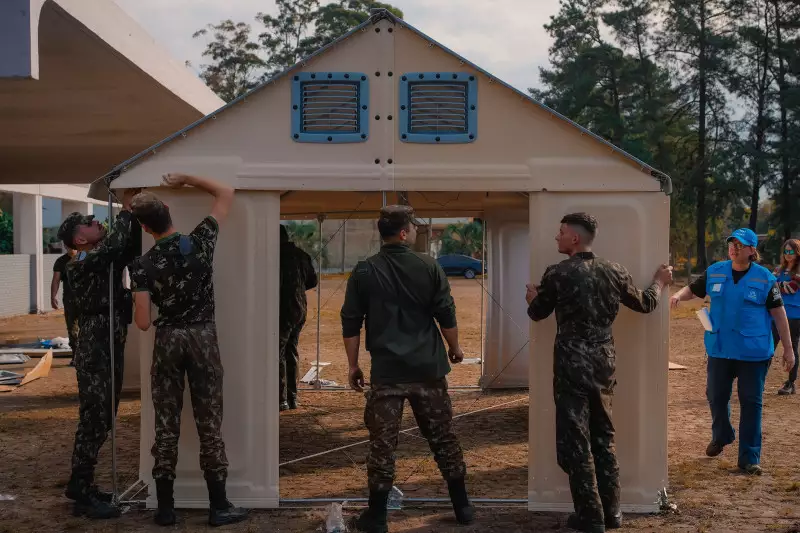

Inundações Rio Grande do Sul 2024
Informações
O que doar?
Dados Atualizados
Participe da Pesquisa
Mapa das Áreas Afetadas
Notícias mais relevantes

ABRIGOS
Saiba onde serão as primeiras "cidades provisórias" para quem perdeu residência nas enchentes do RS
CONTAMINAÇÃO
Com mais duas mortes confirmadas, RS chega a 15 óbitos por leptospirose após enchentes
INFRAESTRUTURA
Mais de 206 mil propriedades rurais foram afetadas pelas enchentes no RS
Clique para mais
Doações mais necessárias no momento
Cesta básica;
Cobertores;
Roupas íntimas novas (masculinas e femininas);
Meias;
Sabão em pó;
Escova e pasta de dente;
desodorante;
xampu;
Fonte e outros donativos necessários:
sosenchentes.rs.gov.br/doacoes-em-geral